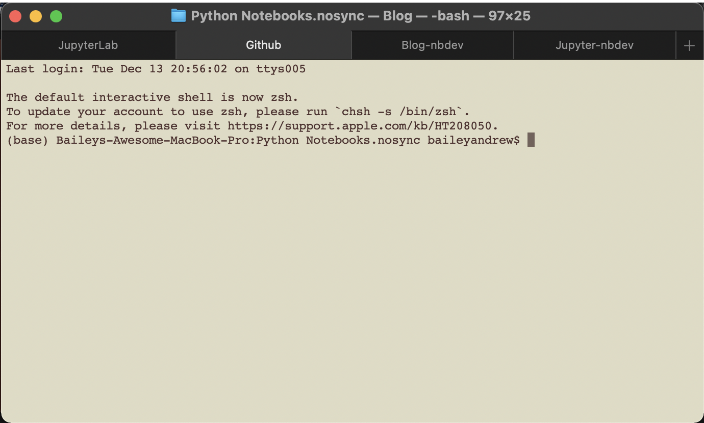
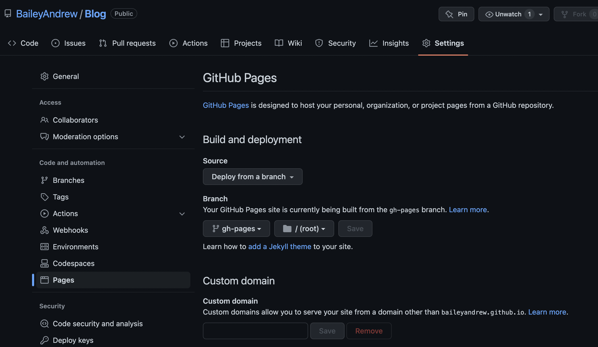
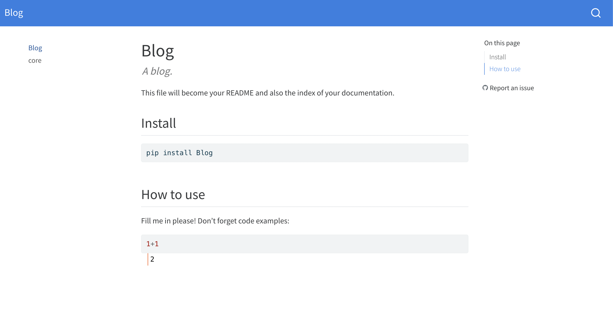

Making a blog
Making a blog
Sam inspired me to make a blog, so here it is. The goal of this blog is to document random problems I encounter over the course of the PhD, since often I end up encountering the same problem multiple times but forget how to solve it.
How to make a blog
The first problem I encountered, albeit not a recurring one, is how to make a blog. Sam made me aware of Jekyll but I wanted to find a Jupyter-based solution since I do (almost) all of my work in JupyterLab. This led me to nbdev. nbdev does many things, it seems, one of which is to allow you to compile .ipynb files into a blog.
Getting environments set up locally
I then created two new conda environments, Jupyter-nbdev and Blog-nbdev: the first environment will be for the nbdev-empowered JupyterLab editor, and the second environment will be the specific kernel I’ll use with the editor.
Since I’ll have multiple environments open, as well as launching JupyterLab from a terminal and handling GitHub push/pulls to publish the blog, I created a terminal setup that looks like this:

I’ll share the commands I used to set this up, with a comment at the start indicating which terminal tab the commands should be run in.
# (Jupyter-nbdev)
conda create -n Jupyter-nbdev
conda activate Jupyter-nbdev
conda install conda-forge::python=3.9 fastai::nbdev=2.3.9 conda-forge::jupyterlab=3.5.1 conda-forge::nb_conda_kernels=2.3.1I chose Python 3.9 because in the past bumping up to 3.10 has caused some packages to not be available. I found the specific versions for other packages by running search commands and picking the most recent version:
# (Jupyter-nbdev)
conda search conda-forge::nbdev
conda search fastai::nbdev
conda search conda-forge::jupyterlab
conda search conda-forge::nb_conda_kernelsI would have preferred to install nbdev from conda-forge (since in the past I’ve had problems from mixing channels) but the only version available was a decent bit behind the fastai channel, and I’m early in the process so it wouldn’t be a big deal if I needed to start over due to channel-mixing woes.
# (Blog-nbdev)
conda create -n Blog-nbdev
conda activate Blog-nbdev
conda install conda-forge::python=3.9 fastai::nbdev=2.3.9 conda-forge::ipykernel=6.19.2ipykernel and nb_conda_kernels are used to allow the Jupyter-nbdev JupyterLab to find the Blog-nbdev kernel. From there, I launched JupyterLab:
# (JupyterLab)
conda activate Jupyter-nbdev
jupyter labCreating the GitHub repo
I followed the steps here. In short: create a new public repository with no ReadMe or other file, but with the ‘description’ field filled in. Then, go to the directory that you want to create your repo in in your terminal:
# (GitHub)
conda activate Blog-nbdev
git clone https://github.com/YOUR_GITHUB_USERNAME/NAME_OF_YOUR_REPO.git
cd NAME_OF_YOUR_REPO
nbdev_newThe last command tells nbdev to fill out the repository with the template for your blog. I got the following output from nbdev_new:
# Output of (GitHub)
/Users/baileyandrew/opt/anaconda3/envs/Blog-nbdev/lib/python3.9/site-packages/ghapi/core.py:101: UserWarning: Neither GITHUB_TOKEN nor GITHUB_JWT_TOKEN found: running as unauthenticated
else: warn('Neither GITHUB_TOKEN nor GITHUB_JWT_TOKEN found: running as unauthenticated')
repo = Blog # Automatically inferred from git
branch = main # Automatically inferred from git
user = BaileyAndrew # Automatically inferred from git
author = Bailey Andrew # Automatically inferred from git
author_email = MY_EMAIL@cool-emails.com # Automatically inferred from git
description = A blog. # Automatically inferred from git
settings.ini created.
/bin/sh: quarto: command not foundThe output looks a little warning-y, but let’s continue for now:
# (GitHub)
git add .
git commit -m 'Created Blog'
git push
# Output
! [remote rejected] main -> main (refusing to allow a Personal Access Token to create or update workflow .github/workflows/deploy.yaml without workflow scope)The push command fails; the error message seems related to the warning I got previously. The problem seems to be that I only ever create GitHub tokens with ‘repo’ permissions, not ‘workflow’ permissions, but nbdev uses the workflow feature to prepare the website. This is easy to fix: on GitHub, click on your profile and go to ‘settings’, then ‘developer settings’, ‘personal access tokens’, and finally ‘tokens (classic)’. You can either create a new token, or update an existing one - just make sure to add the ‘workflow’ permissions.
Once you’ve pushed, go into settings on GitHub to set the branch to be gh-pages: 
Finally, run the following to allow nbdev to trigger workflows:
# (GitHub)
nbdev_install_hooksNow, whenever you push to main, a workflow will automatically trigger that will generate the html/css/js for your website and put it in the gh-pages branch. (I do not know if pushing to other branches would trigger this as well).
Writing a blog post
When you’re ready to start writing blog posts, go into the nbs folder and create a new .ipynb with the kernel Python [conda env:Blog-nbdev]. (If it’s not in the nbs folder, it won’t appear in the blog). There are already two examples, index.ipynb and 00_core.ipynb - index.ipynb probably fills some special role so don’t mess with it, but you can delete 00_core.ipynb.
Importantly, your first cell should be a markdown cell with just a top-level header:
# Top-level headerThe name of the header will be the name of the blog post in the generated website (and the name of the file will be the name of the url to that post). If you have anything else in the first cell, it will probably be cut off. Your blog will likely look something like this initially:

The last issue I had was getting the images to display, which was overcome by creating an images sub-folder of nbs and storing them there.
After that, it worked like a charm! Running nbdev_preview was quite helpful in debugging the issues, as it previews your website and updates automatically!